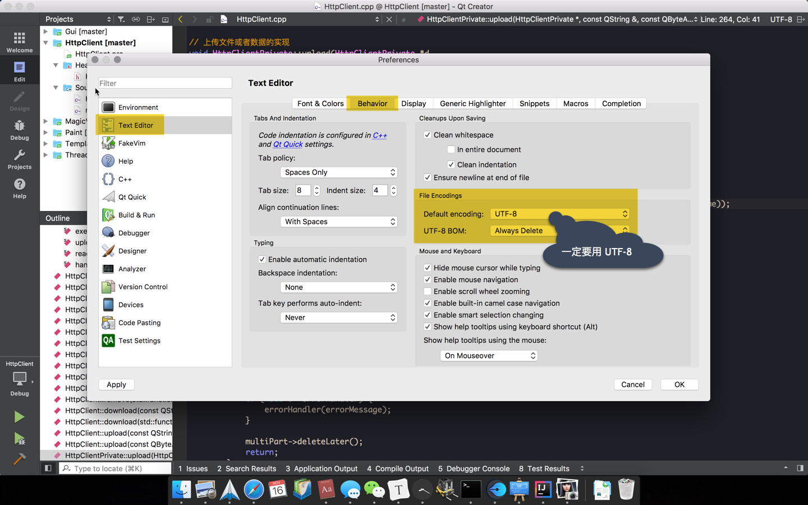
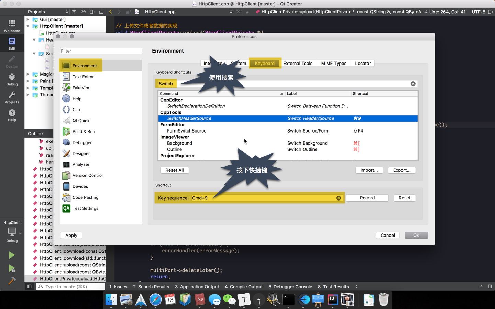
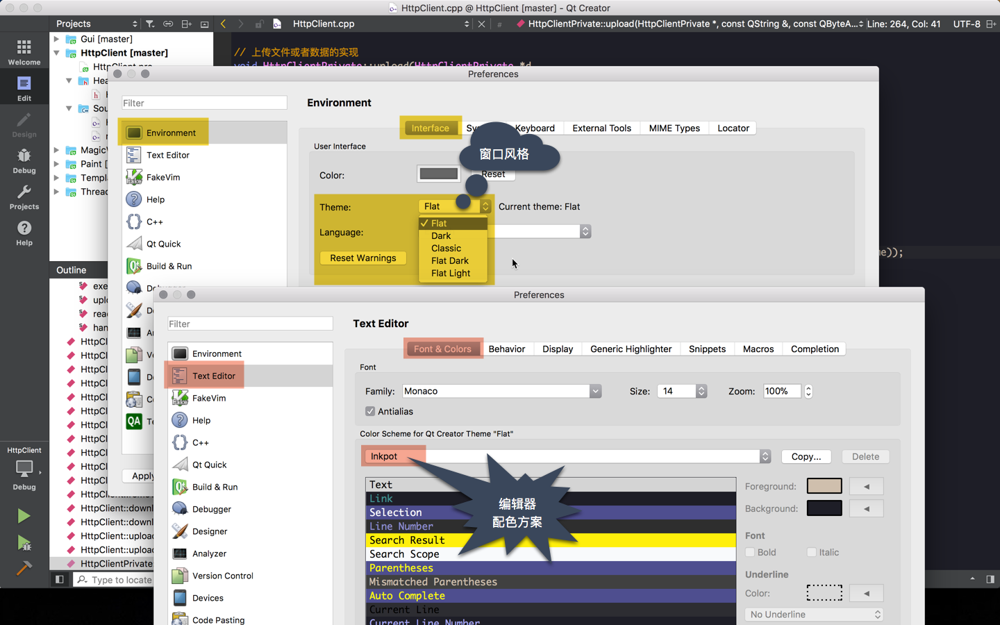
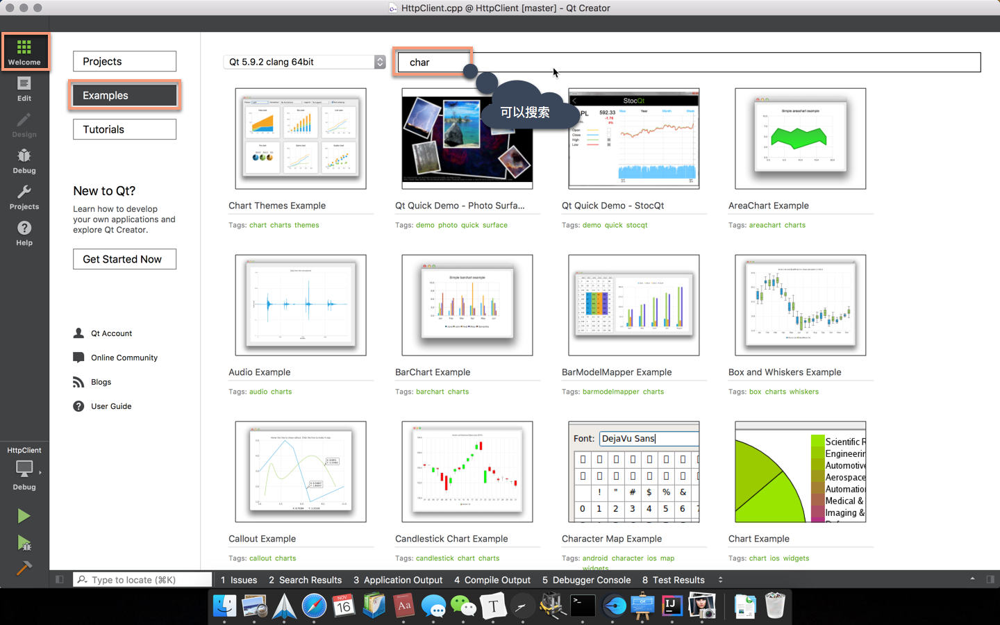
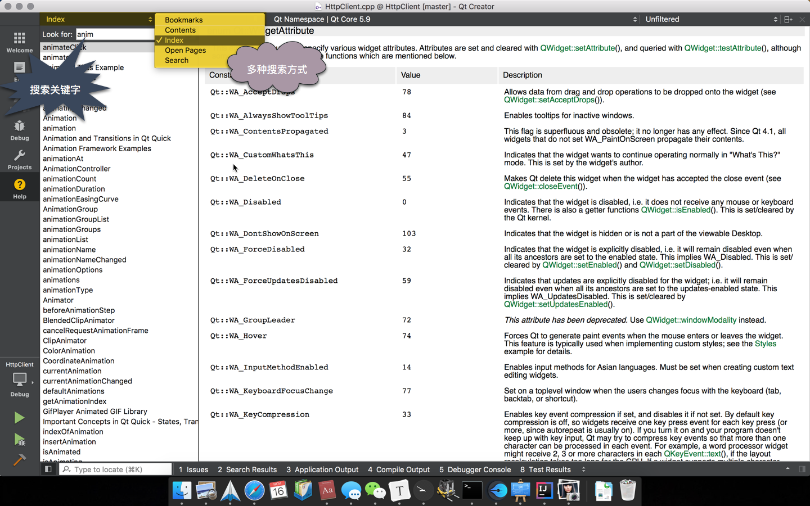
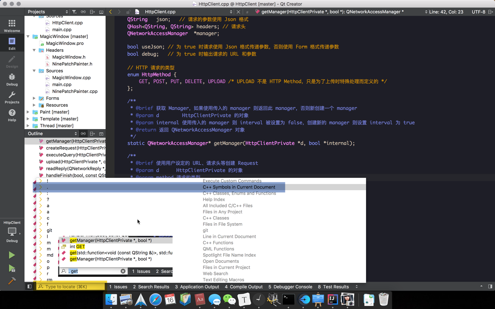
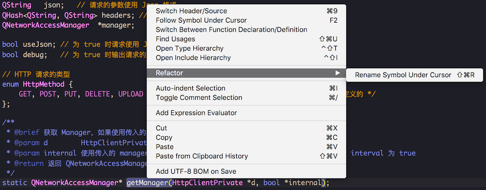
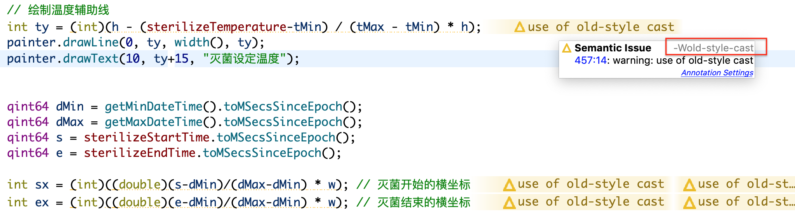

工欲善其事，必先利其器，顺手的开发工具，能够让我们事半功倍，Qt 开发，推荐使用 Qt Creator，因为在 Qt Creator 中集成了很多实用的功能，不需要切换到其他软件就能使用
- 编写代码(废话)
- 使用 UI Designer 进行可视化的布局界面
- 搜索帮助文档
- 学习自带的例子
- Ctrl + K 快速搜索、定位
接下来就简单的介绍下我个人觉得 Qt Creator 使用中比较重要的地方。
设置编码
因为 Qt 5 强制源码使用 UTF-8，所以安装好 Qt Creator 后，第一件事就是设置编码为 UTF-8，这样用 Qt Creator 创建的文件的编码就是 UTF-8 了

设置快捷键
默认的快捷键不喜欢不顺手，不好记，没关系，可以自己设置。先选中要设置快捷键的项，然后点击 Record 按钮，按下想要的快捷键，再按下 Stop Recording 按钮即可，如要恢复默认的快捷键，点击 Reset 按钮

我比较喜欢设置的是
- 自动补全的快捷键: 搜索 CompleteThis
- 切换 .h 和 .cpp 文件: 搜索 SwitchHeaderSource
设置外观
在一个看脸的时代，Qt Creator 也不能落于人后，Qt Creator 的外观有 2 个地方需要设置的，一个是整个窗口的风格，还有就是代码编辑器的配色方案

自带例子
Qt 自带了很多例子，如果好好的去学习，会有很多的收获，比买书看都有用

搜索帮助文档
不知道 QHash 怎么用？谁能给我个 QNetworkAccessManager 的例子啊！我知道画图用 QPainter，但是圆怎么画呢？
遇到问题，首先去查看 Qt 的帮助文档，里面有每一个类的 API，使用示例等，内容非常的丰富，Qt 教程的内容，大多都能在里面找到，所以勤查 Qt 的帮助文档是非常重要的。Qt Creator 中使用帮助文档非常方便，点击左侧的帮助按钮就可以了，搜索的时候可以使用全文搜索(Search)，更多的时候使用索引搜索(Index)

方便的 Locator
Locator 中可以搜索很多内容，不过大多数时候用来搜索当前文件中的函数、变量更多一些。你可能要问啥是 Locator？就是代码编辑器左下角那个输入框了，快捷键是 Ctrl + K，Locator 得到焦点后输入 . + 空格 是搜索当前文件中的函数和变量，l + 数字n 跳到文件中 第 n 行

重命名
当一个函数或者变量被使用了很多次，重命名是非常痛苦的一件事，因为很全部难找到哪些地方使用了它们，只要有一个地方少修改，编译的时候都会报错。好在 Qt Creator 提供了重命名的功能，在函数或者变量名上点击鼠标右键，如图操作，一次就能把所有用到的地方自动的帮我们重命名

编译输出目录
常会把很多 Qt 项目源码都放同一个父目录下，默认的编译输出目录和源码的目录在同一个父目录下，会导致源码目录和编译输出的目录混在一起，看上去很乱，所以喜欢把编译输出指定到其他地方，需要设置 Build & Run > Default build directory:
1 | 例如使用 |
关闭警告
新版的 Qt Creator 对代码进行了更严格的检查，老项目可能会有很多的警告
如果不想看到这些警告，可以修改配置进行关闭: 配置 -> C++ -> Code Model -> Manage...。例如想去掉 -Wold-style-cast 的警告，增加 -Wno-old-style-cast 即可。
no-作为前缀